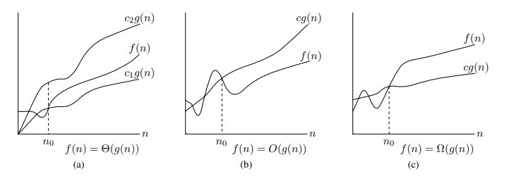
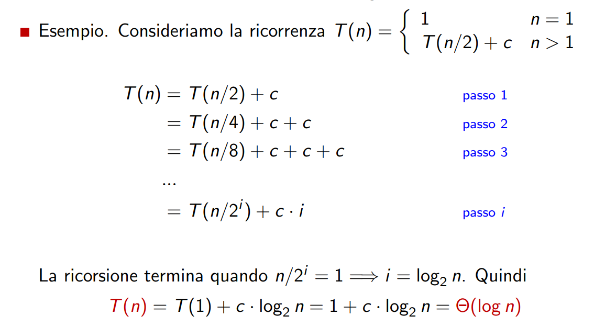
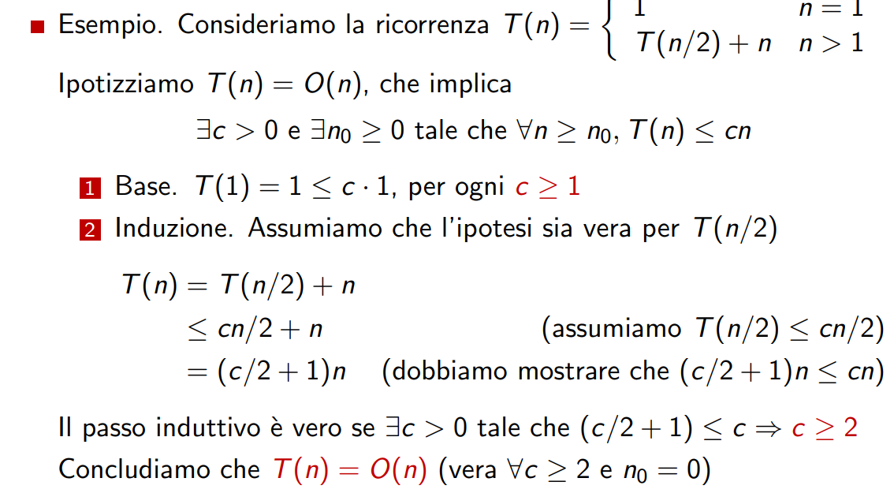
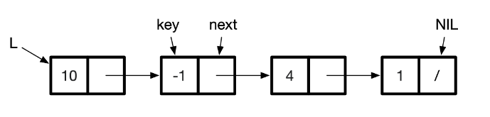
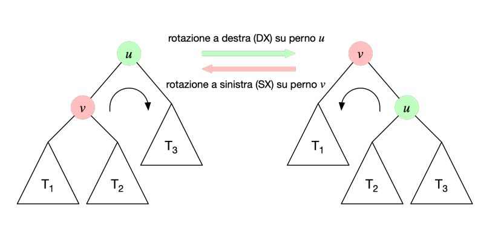
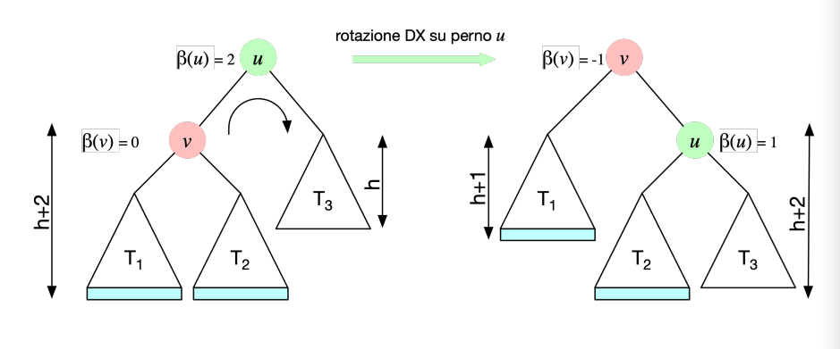
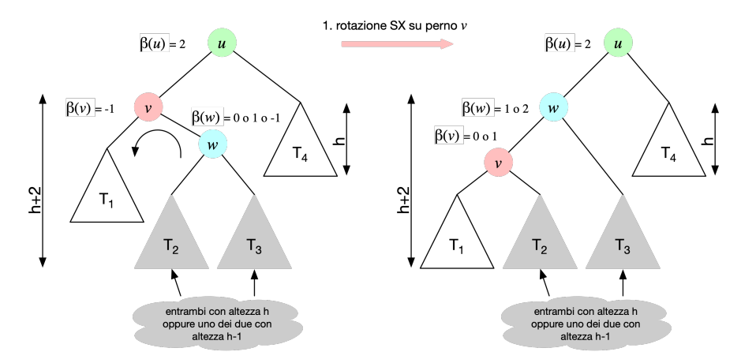
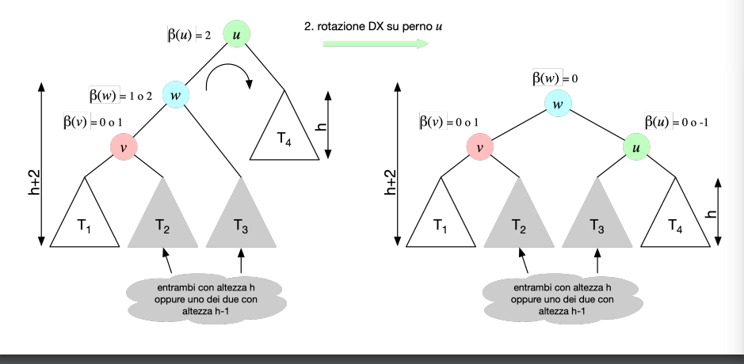

Procedura per risolvere un problema prendendo determinati input e dando determinati output in un numero finito di passi
dobbiamo analizzare :

La notazione theta indica \(f \in \Theta(g)\) indica che le due funzioni f e g hanno la stessa crescita
\(\Theta(g(n)) = \{f(n) : \text{ esistono delle costanti positive c1, c2 e n0 tali che } 0 ≤ c_1g(n) ≤ f(n) ≤ c_2g(n) \text{ per ogni } n ≥ n_0\}\)
Limite asintotico superiore, \(f\in O(g)\) incica che la funzione g ha una crescita minore uguale a quella di g
\(O(g(n)) = \{f(n) : \text{esistono delle costanti positive c e n0 tali che } 0 ≤ f(n) ≤ cg(n) \forall n ≥ n_0\}\)
Limite asintotico inferiore, \(f\in \Omega(g)\) f è omega di g se f ha una crescita maggiore uguale a g
\(\Omega(g(n)) = \{f(n) : \text{esistono delle costanti positive c e n0 tali che } 0 ≤ cg(n) ≤ f(n) per ogni n ≥ n_0\}\)
\(\forall f(n) ,g(n) : f(n) = Θ(g(n)) \iff f(n) = O(g(n)) \wedge f(n) = \Omega(g(n))\)
Limite asintotico inferiore stretto, indica una funzione con crescita strettamente minore
\(o(g(n)) = \{f(n) :\) per qualsiasi costante c > 0, esiste una costante \(n_0 > 0\) tale che \(0 ≤ f(n) < cg(n) \forall n ≥ n_0\}\)
oppure \(\displaystyle \lim_{x \rightarrow +\infty} \frac{f(x)}{g(x)}=0\)
Limite asintotico maggiore stretto, indica una funzione che ha una crescita maggiore
\(\omega(g(n)) = \{f(n) :\) per qualsiasi costante c > 0, esiste una costante \(n_0 > 0\) tale che \(cg(n) < f(n), \forall n ≥ n0\}\)
\(f (n) = O(g(n)) \wedge g(n) = O(h(n)) \implies f (n) = O(h(n))\)
Vale anche per \(o,\omega,\Theta,\Omega\)
\(f(n)=O(f(n))\)
Vale anche per \(\Theta,\Omega\)
\(g(n) = \Theta(f (n)) \iff f (n) = \Theta(g(n))\)
\(g(n) = O(f (n)) \implies f (n) = o(g(n))\)
\(g(n) = \Omega(f (n)) \implies f (n) = \omega(g(n))\)
costo computazionale è il costo dell’ algoritmo complessità computazionale è il costo per risolvere un problema
Caso ottimo: descrive il comportamento in condizioni ottimali Caso pessimo: descrive il comportamento in condizioni sfavorevoli Caso medio: descrive il comportamento medio su tutti i possibili input
L’analisi ammortizzata è un metodo per valutare il costo medio di una sequenza di operazioni
costo medio vs costo ammortizzato
determiniamo un limite superiore al costo totale di una sequenza di n operazioni e dividiamo per n
Idea: sostituiamo iterativamente la parte ricorsiva nell’equazione finchè non appare uno schema ricorsivo legato al passo di iterazione
esempio

Ovviamante si può utilizzare solo se si ha un’ipotesi da verificare
esempio

In un albero di ricorsione un nodo esprime il costo di un sottoproblema
Idea: può essere visto come la versione su albero del metodo iterativo
1 Generiamo l’albero di ricorsione dall’equazione di ricorrenza 2 Calcoliamo il numero di nodi ad ogni livello dell’albero 3 Identifichiamo qualche schema ricorrente legato al livello dell’albero
Può essere complesso formulare un’ipotesi (metodo della sostituzione) L’albero di ricorsione pu`o essere usato per generare ipotesi Tali ipotesi possono poi essere validate col metodo di sostituzione
\[ T(n)= \begin{cases}d & & \text{if }n=1\\aT(n/b)+cn^\beta & &\text{if }n>1\end{cases} \]
e sia \(\alpha = \frac{\log a} {\log b}\). l’equazione di ricorrenza ha la seguente soluzione:
applicazione
\[ T(n)= \begin{cases}d & & \text{if }n=1\\aT(n/b)+cn^\beta & &\text{if }n>1\end{cases} \]
il teorema fondamentale non si può applicare ad algoritmi ricorsivi che non effettuano partizioni bilanciate.
ad esempio, selection sort (cerca il minimo, scambia con il primo elemento, e procedi ricorsivamente sul resto del vettore) ha equazione di ricorrenza del tipo
\[ T(n)=\Bigg\lbrace \begin{matrix}1\\n+T(n-1)\end{matrix}\quad \frac{\text{if }n=1}{\text{if }n>1} \]
come altro esempio, il calcolo di fibonacci ricorsivo ha equazione di ricorrenza del tipo
\[ T(n)=\Bigg\lbrace \begin{matrix}1\\T(n-1)+T(n-2)+1\end{matrix}\quad \frac{\text{if }n\le1}{\text{if }n>2} \]
in questi casi utilizzeremo altre tecniche per risolvere le equazioni di ricorrenza.
Def: Definisce come i dati sono logicamente organizzati Definisce le operazioni per accedere e modificare i dati
Prototipi: (descrizione ad alto livello della struttura)
Implementazione:(realizzazione concreta della struttura dati in un linguaggio di programmazione, determina i tempi d’esecuzione)
Tipi di Strutture di dati:
Lineari: dati in ordine sequenziale
Non-Lineari: nessun ordine
Statiche: numero di elementi costante
Dinamiche: numero di elementi può variare
Omogenee: un solo tipo di dato memorizzabile
Eterogenee: differenti tipi di dato memorizzabili
Descrizione:Contiene delle chiavi univoche, ognuna delle quali è associata ad un valore e ogni chiave è univoca
Operazioni:
search(key): cerca l’oggetto associato alla chiaveinsert(key,dato): inserisce nel dizionario il dato associato alla chiavedelete(key) elimina la coppia chiave e dato dal dizionarioimplementazione con array: teniamo un array ordinato con tutte le chiavi
search(key): utilizziamo la ricerca binaria per trovare l’oggetto \(O(\lg n)\)insert(key,dato): ricerchiamo la chiave più vicina e poi spostiamo tutte le chiavi di un passo più avanti \(O(\lg n)+O(n)=O(n)\)delete(key): ricerchiamo la chiave spostiamo tutte le chiavi di un passo indietro \(O(\lg n)+O(n)=O(n)\)implementazione con liste
search(Key k)
insert(Key k, Data d)
delete(Key k)
Descrizione le linked list sono dove ogni elemento mantiene il pointer dell’elemento successivo, e mantiene lìordine sequenziale

Operazioni:
Descrizione: è una struttura dati che tiene gli elementi come una pila si può accedere solo all’ultimo elemento inserito ed eliminarlo
Operazioni:
push(elemento): aggiunge un nuovo elemento all’inizio della struttura \(O(1)\)pop(): rimuove l’elemento aggiunto più di recente alla struttura \(O(1)\)
TODO:analisi ammortizzata da pag 34 pdf
Descrizione: è una SD che permette di aggiungere elementi alla fine e toglierne all’inizio, fa accedere all’primo e all’ultimo elemento
Operazioni:
queue(elemento): inseriesce l’elemento alla fine \(O(1)\)dequeue(): elimina l’elememto all’inizio \(O(1)\)Def: è un grafo con \(n\) vertici e \(n-1\) archi, in particolare c’è un unico percorso tra due vertici
Def: è un albero in cui ogni vertice ha massimo due figli è massimo un padre
definizioni:
visita di profondità (dfs)
Il bst è una struttura dati che permette la ricerca di una chiave dentro l’albero
search(Key k): cerca l’oggetto associato alla chiave kinsert(Key k, Data d): aggiunge la coppia (k, d) al Dizionariodelete(Key k): elmina la coppia (k, d) dal Dizionarioproprietà: tutte le chiavi nel sottoalbero sinistro di v sono ≤ v.key e tutte le chiavi nel sottoalbero destro di v sono ≥ v.key
search: confronta la chiave con quella del nodo corrente se è uguale ritorna il valore se è maggiore va ricorsivamente nel sottoalbero destro se è minore nel sinistro(Costo \(O(h)\) dove h è l’altezza dell’albero)
min e max: min va nel nodo più a sinistra del’albero che riesce a trovare , il massimo nel nodo più a destra
predecessore il predecessore di un nodo è l’elemento che ha come valore il più vicino rispetto (algoritmo se esiste il nodo a sinistra si chiama max sul nodo di sinsitra il risultato è il predecessore, se non esiste prende il nodo padre se è figlio sinistro se non lo è ritorna il parent)
insert incomincia dalla root e in base alla chiave che deve inserire se è maggiore del nodo a sinistra va in quello a destra se no va in quello a sinistra e ripete ricorsivamente questo procedimento finchè non trova un nodo nullo
rimozione: abbiamo tre casi:
È un albero bilanciato che mantiene l’altezza dell’albero così che tutte le operazioni abbiano costo algoritmico per le operazioni di search, delete e insert in \(O(\log n)\)n le caso pessimo.
Fattore di bilanciamento β(v) di un nodo v è dato dalla differenza tra l’altezza del sottoalbero sinistro e destro di v: β(v) = altezza(v.left) - altezza(v.right)
Bilanciamento in altezza se per ogni nodo v le altezze dei suoi sottoalberi sinistro e destro differiscono al più di uno \(|\beta(v)|\le 1\)
L’albero può essere sbilanciato dalle operazioni di insert e delete
UpdateHeight: TODO
Beta: TODO
Rotazione semplice:scambia il nodo radice mantenendo la proprietà di ordinamento dell’albero

questa operazione costa O(1)
Sbilanciamenti:
SS:\(\beta(u)=2\) e \(\beta(left(u))\ge 0\)
DD: \(\beta(u)=-2\) e \(\beta(right(u))\le 0\)
SD: \(\beta(u)=2\)e \(\beta(right(u))=-1\)
DS:\(\beta(u)=-2\)e \(\beta(right(u))= 1\)
Sbilanciamento SS
si fa perno su u e si ruota v, rotazione a destra

Sbilanciamento SD
si fa perno su v e si fa una rotazione a SX 
rotazione DX con perno su u

Tabella Hash è un implementazione della struttura dati Dizionario con: insert,serach e delete in \(O(1)\)
Indichiamo:
NOTA se la cardinalità di K è molto vicina a quella di U convienei utilizzare un indicizzamento diretto
se la cardinalità di K è molto più piccola possiamo utilizzare un HashTable
Per creare la tabella hash abbiamo bisogno di:
metodi per creare l’hash:
concatenamento: le chiavi con lo stesso hash vengono memorizzate attraverso una lista concatenata
indirizzamento aperto tutte le chiavi sono sullo stesso array, per scegliere la posizione degli hash giù utilizzati si utilizza la funzione hash modifica per prendere un indice
Metodi di ispezionamento:
Tipi di Ordinamento:
funzionamento: ricerca il minimo in tutto l’array tranne la parte che è già stata ordinata e lo scambia con il primo elemenento della parte non ordinata, il primo elemento della parte non ordinata ora è in ordine e quindi diventa parte della parte ordinata e ricomincia
implementazione
public static void selectionSort(Comparable A[]) {
for (int k = 0; k < A.length - 1; k++) {
// cerca il minimo A[m] in A[k..n-1]
int m = k;
for (int j = k + 1; j < A.length; j++)
if (A[j].compareTo(A[m]) < 0)
m = j;
// scambia A[k] con A[m]
if (m != k) {
Comparable temp = A[m];
A[m] = A[k];
A[k] = temp;
}
}
}Costo computazionale:\(\Theta(n^2)\)
funzionamento: tiene una parte ordinata e una non ordinata, prende il primo elemento della parte non ordinata e lo inserisce ordinandolo nella parte ordinata
implementazione
public static void insertionSort(Comparable A[]) {
for (int k = 1; k <= A.length - 1; k++) {
int j;
Comparable x = A[k];
// cerca la posizione j in cui inserire A[k]
for (j = 0; j < k; j++)
if (A[j].compareTo(x) > 0) break;
if (j < k) {
// Sposta A[j..k-1] in A[j+1..k]
for (int t = k; t > j; t--)
A[t] = A[t – 1];
// Inserisci A[k] in posizione j
A[j] = x;
}
}
}Costo computazionale:\(\Theta(n^2)\)
funzionamento: intera l’array finchè non è ordinato, ogni volta che trova un elemento minore di quello che segue li swappa e continua a ciclare
implementazione
public static void bubbleSort(Comparable A[]) {
for (int i = 1; i < A.length; i++) {
boolean scambiAvvenuti = false;
for (int j = 1; j <= A.length - i; j++) {
// Se A[j-1] > A[j], scambiali
if (A[j - 1].compareTo(A[j]) > 0) {
Comparable temp = A[j - 1];
A[j - 1] = A[j];
A[j] = temp;
scambiAvvenuti = true;
}
}
if (!scambiAvvenuti) break;
}
}Costo computazionale:\(\Theta(n^2)\)
funzionamento:
funzionamento (partition): Manteniamo due indici, inf e sup, che vengono fatti scorrere dalle estremità del vettore verso il centro
implementazione
public static void quickSort(Comparable A[]) {
quickSortRec(A, 0, A.length - 1);
}
public static void quickSortRec(Comparable A[], int i, int f) {
if (i >= f) return;
int m = partition(A, i, f);
quickSortRec(A, i, m - 1);
quickSortRec(A, m+1, f);
}
private static int partition(Comparable A[], int i, int f) {
int inf = i, sup = f + 1;
Comparable temp, x = A[i];
while (true) {
do {
inf++;
} while (inf <= f && A[inf].compareTo(x) <= 0);
do {
sup--;
} while (A[sup].compareTo(x) > 0);
if (inf < sup) {
temp = A[inf];
A[inf] = A[sup];
A[sup] = temp;
} else break;
}
temp = A[i];
A[i] = A[sup];
A[sup] = temp;
return sup;
}Costo di ordinamento peggiore \(\Theta (n^2)\) (scegliendo come pivot il numero più piccolo), migliore \(\Theta (n \log n)\) (scegliendo il numero che divide in esattamente due array)
funzionamento:
implementazione
public static void mergeSort(Comparable A[]) {
mergeSortRec(A, 0, A.length - 1);
}
private static void mergeSortRec(Comparable A[], int i, int f) {
if (i >= f) return;
int m = (i + f) / 2;
mergeSortRec(A, i, m);
mergeSortRec(A, m + 1, f);
merge(A, i, m, f);
}
private static void merge(Comparable A[], int i1, int f1, int f2) {
Comparable[] X = new Comparable[f2 - i1 + 1];
int i = 0, i2 = f1 + 1, k = i1;
while (i1 <= f1 && i2 <= f2) {
if (A[i1].compareTo(A[i2]) < 0)
X[i++] = A[i1++];
else
X[i++] = A[i2++];
}
if (i1 <= f1)
for (int j = i1; j <= f1; j++, i++) X[i] = A[j];
else
for (int j = i2; j <= f2; j++, i++) X[i] = A[j];
for (int t = 0; k <= f2; k++, t++) A[k] = X[t];
}costo computaizonale: \(\Theta (n \log n)\) (metodo dell’esperto \(T(n)=2T\Bigl(\frac{n}{2}\Bigr)+n\))